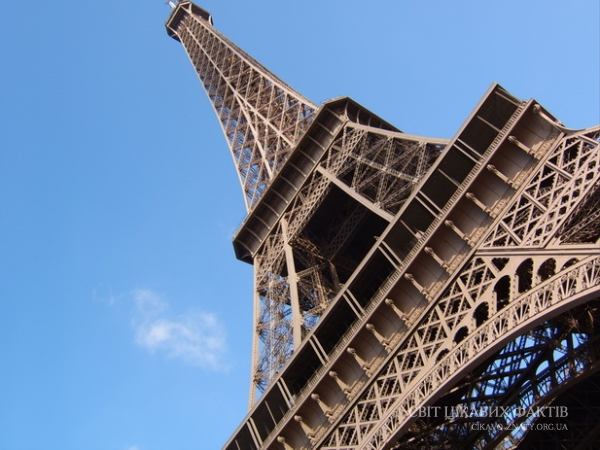

25 жовтня 1889 року у Парижі завершено будівництво Ейфелевої вежі. Сьогодні це одна з найбільш відомих і відвідуваних визначних пам’яток світу, до того ж справжній символ французької столиці. Ми вирішили поділитися маловідомими, але дуже цікавими фактами про цю прекрасну споруду.
В якості прототипу для побудови вежі послужила гомілкова кістка. Інженер Густав Ейфель уважно її вивчав і застосував всі напрацювання природи в архітектурних цілях.
Ейфель не планував, що його споруда простоїть більше сотні років
- Cпочатку його проект будувався в пам’ять 100-річного ювілею Французької революції
- Через 20 років вежу мали розібрати.
На момент офіційного відкриття вежа стала найвищою будівлею в світі. Лише через 40 років це
звання побив
хмарочос
«Крайслер».
Незважаючи на величезну висоту вежі, за час її будівництва розбився всього лише один
робітник.
Ейфелева вежа пофарбована в 3 відтінку бронзи.
Ейфелева вежа здається однотонною, але насправді вона пофарбована в 3 відтінку бронзи (від темного знизу до світлого нагорі). Ілюзія однотонності виникає за рахунок перспективи. Фарбу споруди оновлюють кожні 7 років, причому роблять це повністю в ручну.
Густав Ейфель увічнив у вежі імена 72 знаменитих французьких інженерів, вчених і математиків тих часів. Один час всі імена були зафарбовані, але потім знову відновлені.
Під час війни французи, навіть віддаючи німецьким окупантам місто, вирішили не допустити їх на верхівку вежі і вивели з ладу ліфти, щоб ті не змогли помилуватися видом полеглого міста.
Вежа була продана двічі, причому одный і тій же людині – шахраєм Віктором Люстигом. У 1925 році він переконав двох різних людей взяти участь у фінансуванні вежі, так як місто більше не могло її підтримувати. Люстиг навіть наполягав на хабарі, щоб клієнт міг виграти престижний конкурс торгів міста. Отримавши гроші, шахрай зник, а через кілька років спробував повторити той же трюк, але невдало.
Якщо ви опублікуєте фото освітленій башти, ви порушите закон Франції.
Ейфелеву вежу не можна фотографувати вночі. Щоб це зробити, потрібно отримати письмовий дозвіл у компанії SETE, яка займається обслуговуванням вежі. Об’єктом авторського права є не сама вежа, а її нічне освітлення. І якщо ви опублікуєте фото освітленої вежі, ви порушите закон Франції.
Безліч зменшених копій Ейфелевої вежі розкидані по всьому світу. Свої вежі мають Лас-Вегас, Копенгаген, Гаунчжоу, Слобозия, Варна, В’єтнам і навіть місто Актау в Казахстані.